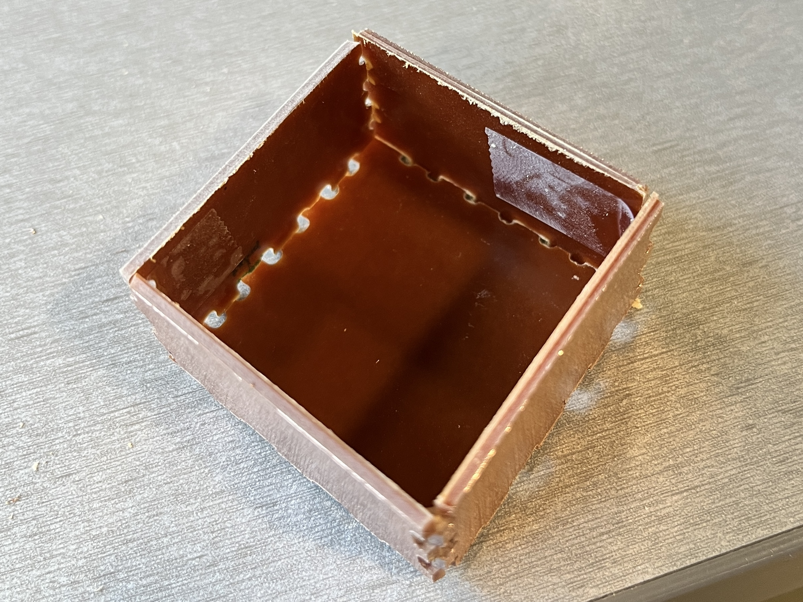
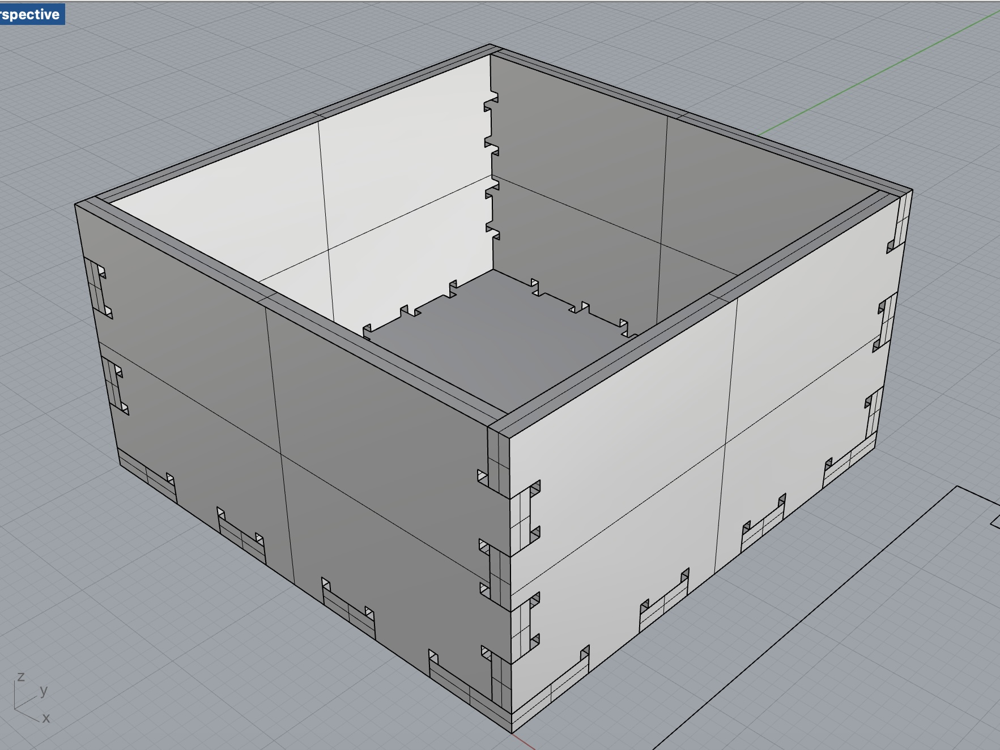
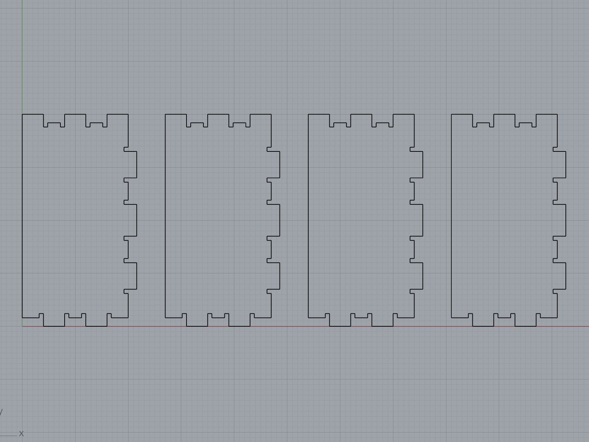
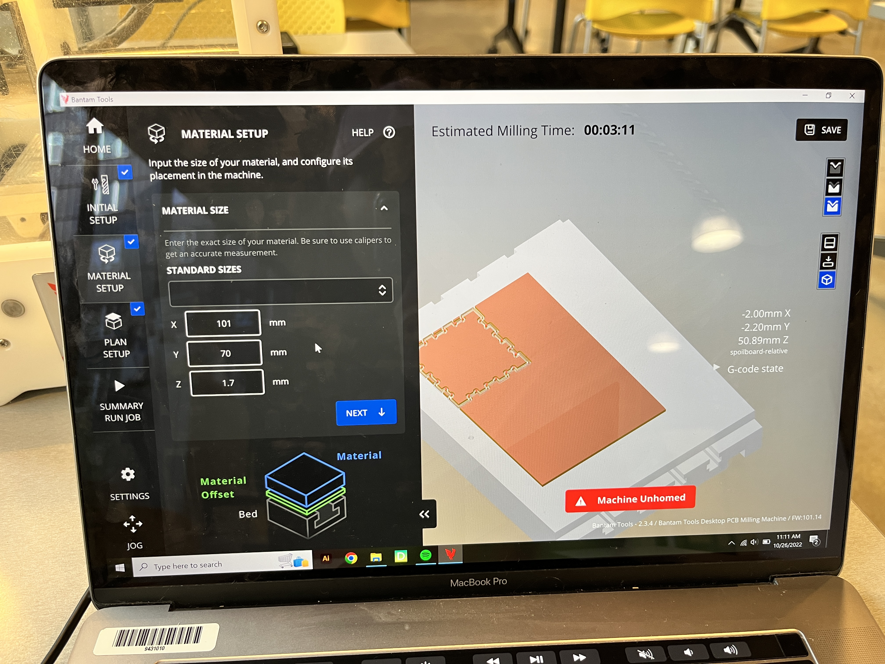
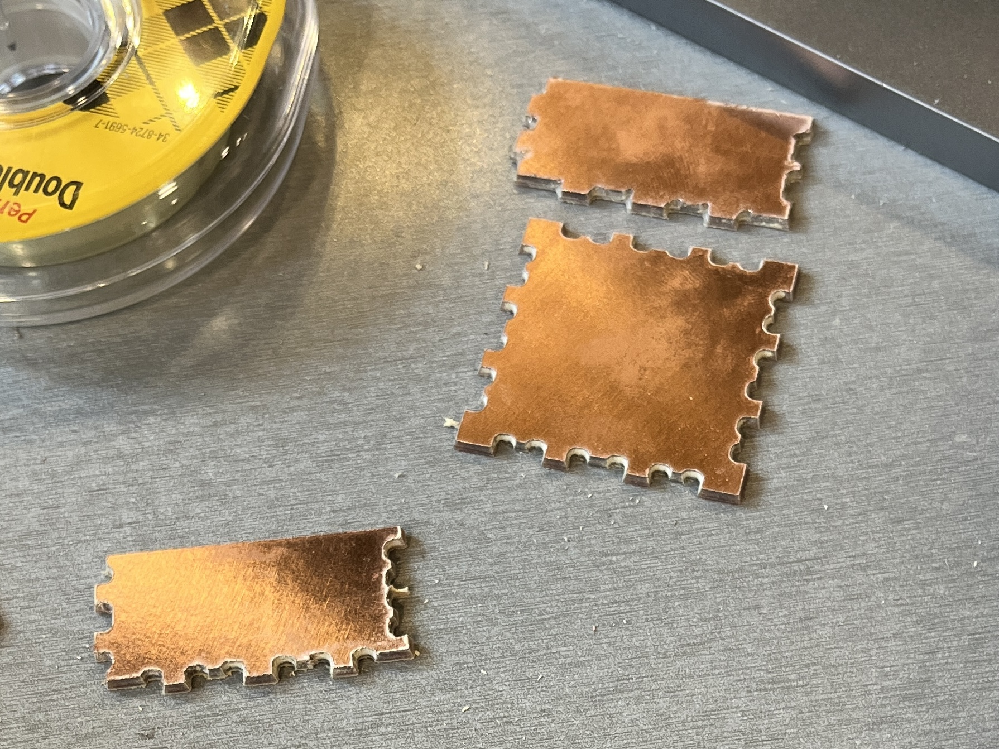
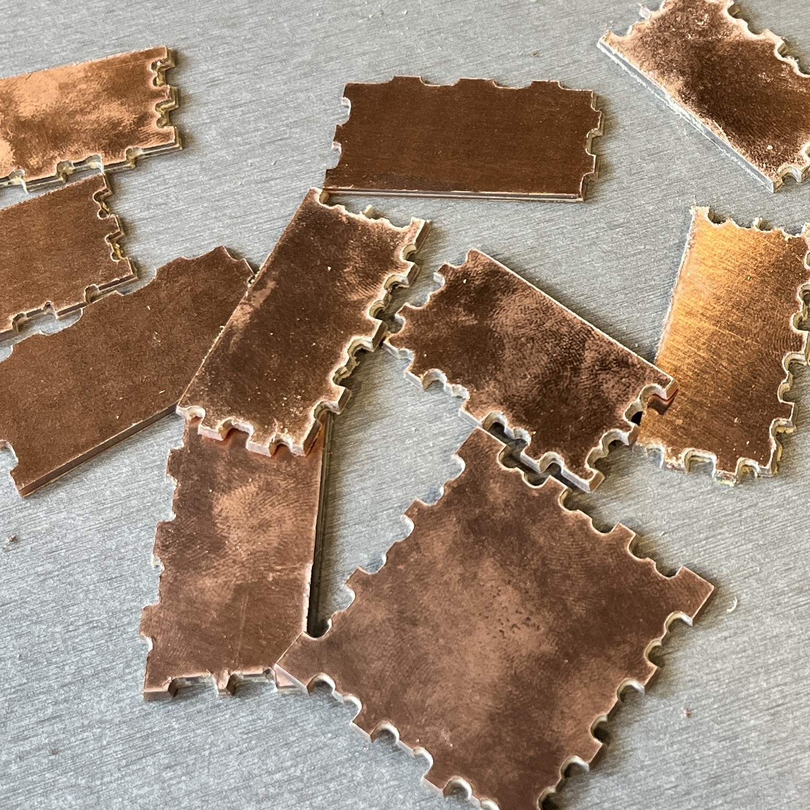
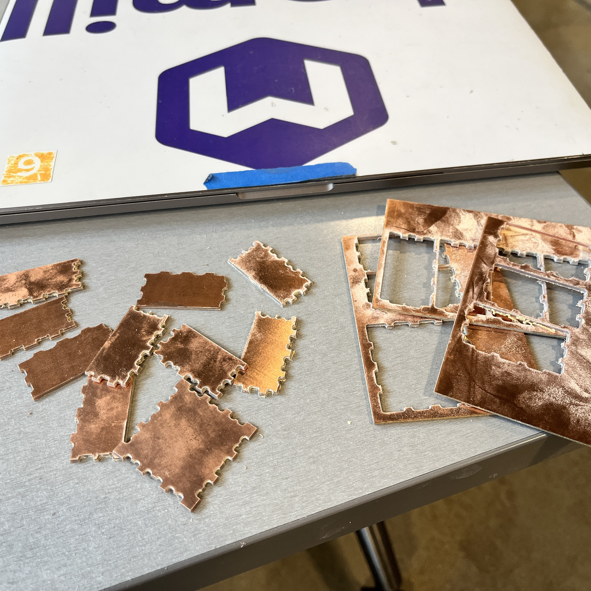
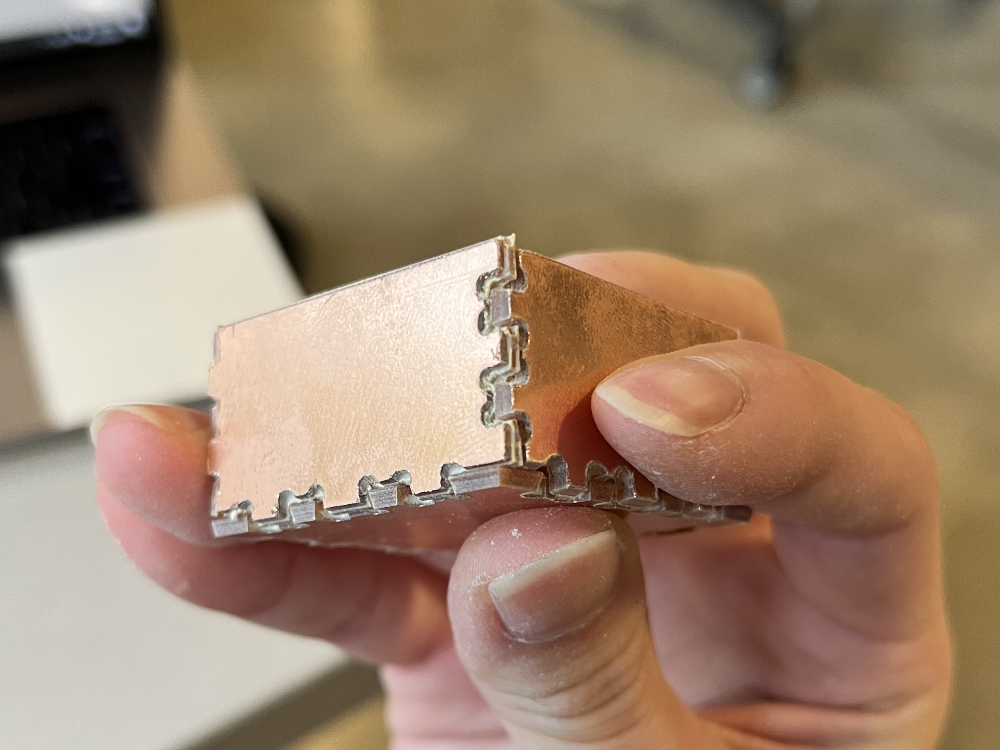
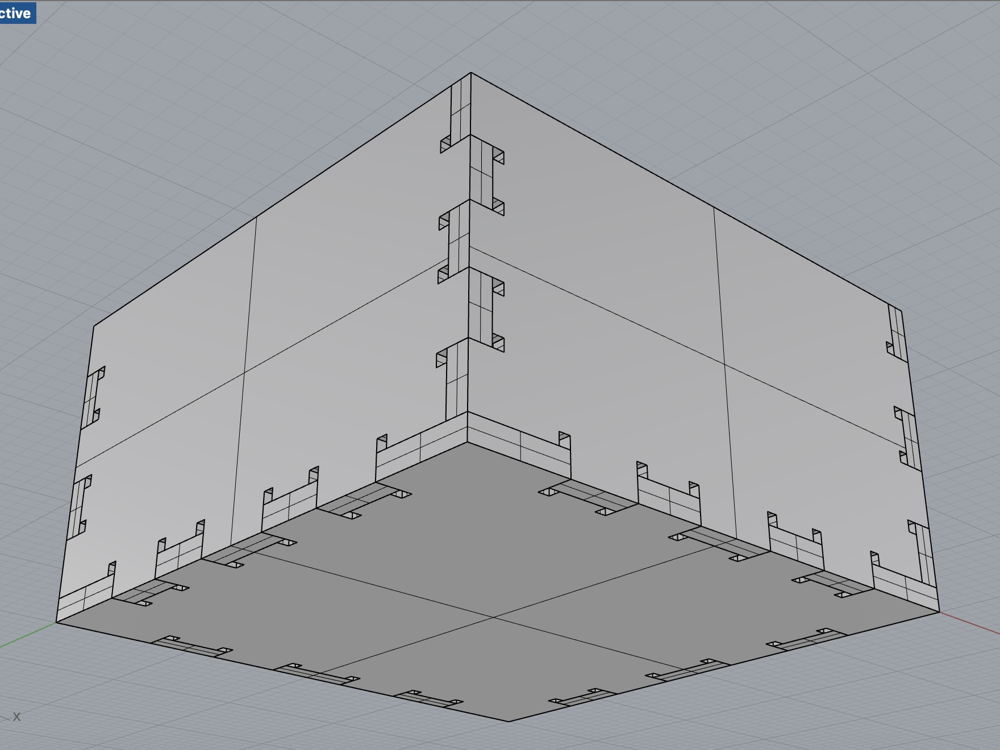
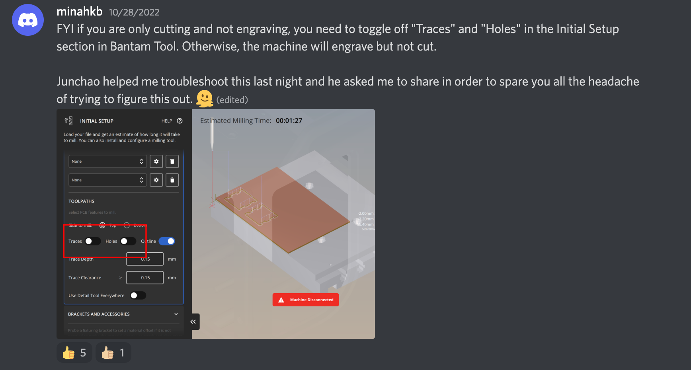

Assignment 4: Subtractive Manufacturing
By Sherry Wang
Before diving into the documentation, please note that this has been an extremely busy week for me. As a result, I only had time to do this assignment on Wednesday. By then, Junchao's office hour was not published and Discord was not active yet. I wouldn't consider this assignment of mine to be a complete success, but I figured out eventually what I did wrong and learned from it!
As usual, below are images of the final outcome. The physical box's joints were connected via the help of tapes (which I'll discuss later), but the assembled piece in Rhino should show that all dimensions were correct.

Using the tutorial slides being shared to the class as a guide, I started by creating the model files in Rhino. I wanted to design a box with a bottom and four sides. After measuring the sheets and spacing out the imaginery design, I decided that the bottom should be orignated from a square of 40mm*40mm and the sides from rectangles of 20mm*40mm.
Next, I measured the thickness of these sheets (1.6mm) using a caliper to create the joints. The joints are little rectangles of width 1.6mm, so that the pieces can be easily connected. For lengths of joints, I used a combination of 4mm, 5mm, and 6mm, so that they are more evenly spaced out on the design and aesthetically pleasing.
I also remembered to leave spaces for the dogbone by making tiny squares with side length 0.8mm, which was the diameter of the 1/32" end mill we would be using.
Then I trimmed and joined all curves together so that the pattern was closed and ready to be exported to dxf files.

I became really familiar with Rhino by now, but one thing that was tricky was the addition of a bottom. Since the bottom would have fixed lengths, I was cautious that (longer side length + joint width on one shorter side) = bottom length. This way, when assembling, it would be connected properly.
I would also recommend assembling the pieces together in Rhino first before cutting. I failed to do that and wasted some materials.
Once the models were done and exported to dxf files in Rhino, I used KiCad to plot them from dxf files to gbr files. The tutorial slides were very comprehensive on this step.
Next, I brought the files and materials to the Mill and used their computers (which had the Bantam tool) and the CNC milling machines. After vaccum cleaning the inside of the #2 machine and plugging it in, I followed the tutorial slides once again to start importing the files.
While most set up was easy, there was one place where calculations were needed. For "Trace Depth" in Initial Setup, enter the thickness of the FR1 sheet, since you want to cut all the way through. For "Material Offset Z" in Material Setup, enter the subtraction of the sacrifice-tape-FR1 sandwich and the thickness of the FR1 sheet.
Another thing that might need some caution would be the Material Size: make sure the X and Y match your sheet and are not flipped.

Then, I installed the 1/32" end mill into the machine, did a touch-off, and load the sheet. Triple check that the sandwich of the sheet and sacrifice piece sticks to the platform very tightly. Or else the pieces might fly away when cutting (happened to me two or three times).

At last, close the safety cover of the machine and start the job! There would be an Estimated Milling Time shown on computer screen, and usually it takes about several minutes.
After about three minutes, the bottom of my box was done. But that's when I noticed that the edges were off. As you can see, the dogbones were too large and the piece looked like an actual dog chewed on it.

Not knowing what caused this, I came up with five possible reasons and decided to rule each out when milling the sides:
1. When designing the joints, I first shrank the inner pieces to 95% the size of the outer joints. Perhaps that was too much? I remilled the joints without shrinking, but still did not work.
2. The entire model I created might be wrong? This was not the reason either, as I successfully assembled the box in Rhino.
3. The "Material Offset Z" might be too deep, causing the end mill to be too low and damaging the sheet? To solve this, I tried changing from 1.7mm to 1.6mm but did not see any difference.
4. The FR1 sheet being given did not have the same density at all places? I couldn't really solve this, but since the entire class was using this material, I assumed this was not the problem.
5. The end mill was damaged? I wanted to change to another end mill to prove/disprove this, but I ran out of sheets (both mine and a friend's since I knew he was doing the 3D printing option) and had to give up.
In the end, I printed about ten pieces of the sides, but was as frustrated as ever.

I tried connecting and pressing them together using my fingers and later tapes, and here's the result:

This is what it should look like, from similar angles:

UPDATE 10/31/2022: I finally had time to look at Discord and saw @minahkb's post.

When milling, I tried turning off "Outline", but didn't adjust the other two switches. If I had, the outcome would have been successful :/ But now I know!
Source files:
bottom 3dm model
bottom dxf file exported from Rhino
bottom gbr file plotted from KiCad
side 3dm model
side dxf file exported from Rhino
side gbr file plotted from KiCad
assembled box 3dm model in Rhino
Acknowledgements:
@minahkb and Junchao on Discord for letting me know what I did wrong!
Junchao and Nadya for the cutting sheets and the tutorial slides!